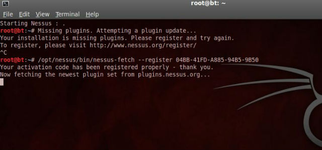
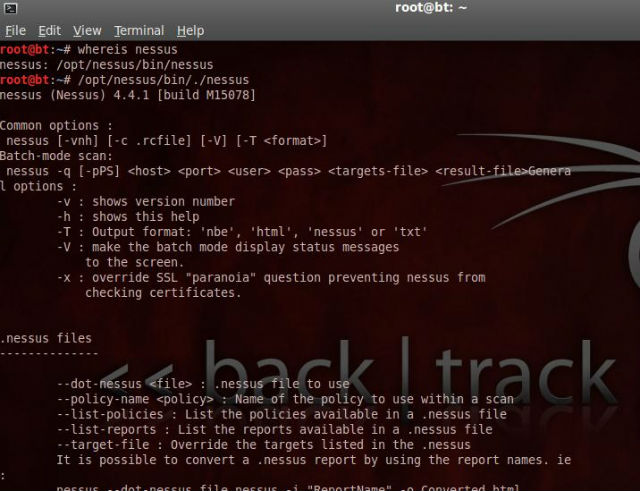
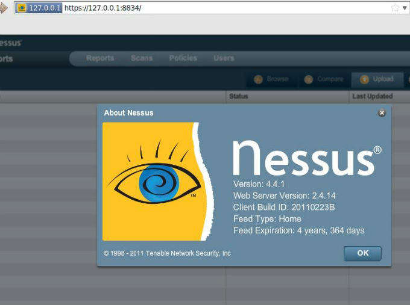

backtrack5下注册nessus非商用版
2011-09-08
打开BT5下菜单Backtrack --> Vulnerability Assessment --> Network Assessment --> Vulnerability Scanner --> Nessus start 会提示插件缺失需要注册。
root@bt:~# Missing plugins. Attempting a plugin update...
Your installation is missing plugins. Please register and try again.
To register, please visit http://www.nessus.org/register/
到官网http://www.nessus.org/register注册，好工具只给注册家用版，填好邮箱注册即可，登陆邮箱会收到一封确认邮件。告诉你在不同系统(windows/linux/bsd/mac os/)下该如何做。我在BT5下，按照提示运行命令即可：
Linux and Solaris Users :
To activate your account, simply execute the following command : /opt/nessus/bin/nessus-fetch --register 04BB-41FD-A885-94B5-9B50
(这串序列号是每次官网注册随即生成的，这个是我注册的时候提供给我的) 
之后就是正常更新插件，更新完毕你就可以正常使用强大的nessus漏洞扫描工具了，可以看到版本号是最新的4.4.1。只不过这是非商用版的，商用版的一般给企业用的。 
进入菜单Backtrack --> Vulnerability Assessment --> Network Assessment --> Vulnerability Scanner --> Nessus user add
添加username:root、 password:toor (可以随便添加用户名密码)
更改默认设置:
root@bt:gedit /opt/nessus/etc/nessus/nessusd.conf
listen_address = 127.0.0.1 (默认为0.0.0.0)
enable_listen_ipv4 = yes （默认没有开启ipv4侦听）
登陆浏览器，输入地址：https://127.0.0.1:8834/, 其中8834为nessus默认的web端口。一段时间的初始化之后，输入刚才添加的用户名root和密码toor即可使用nessus homefeed版本了。可以看到homefeed版本给了5年的试用时间。

Category: Linux/Unix/USS Tagged: Backtrack nessus注册